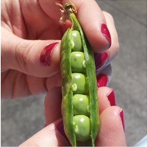

Zucchine

Coltivare in terreno molto ricco di materia organica e non coltivare dopo Solanacee o piante della stessa famiglia delle cucurbitacee.
- Varietà: Zucchina chiara di Faenza
- Periodo di semina:Marzo / Aprile
- Primo raccolto:Fine Aprile
- ultimo raccolto:Fine Luglio
- Raccolto
Dimensione Quantità Piccole (10cm) 16 Medie (11-16cm) 26 Grandi (>16cm) 9 51
Piselli
American Wonder: Varietà media precoce come ciclo colturale.
Consigli
-
Piantare in semenzaio riscaldato.
È importante:- Acquistare vasetti biodegradabili (di cocco o cartone)
-
Mantenere areato il semenzaio per evitare muffe
- Non usare il coperchio del semenzaio
- Non usare mettere il semenzaio vicino al termosifone
- Fissare i sostegni nel terreno non appena le piantine raggiungono i 10cm
- Acquistare una rete con spazi di non più di 10cm per garantire sostegni adeguati